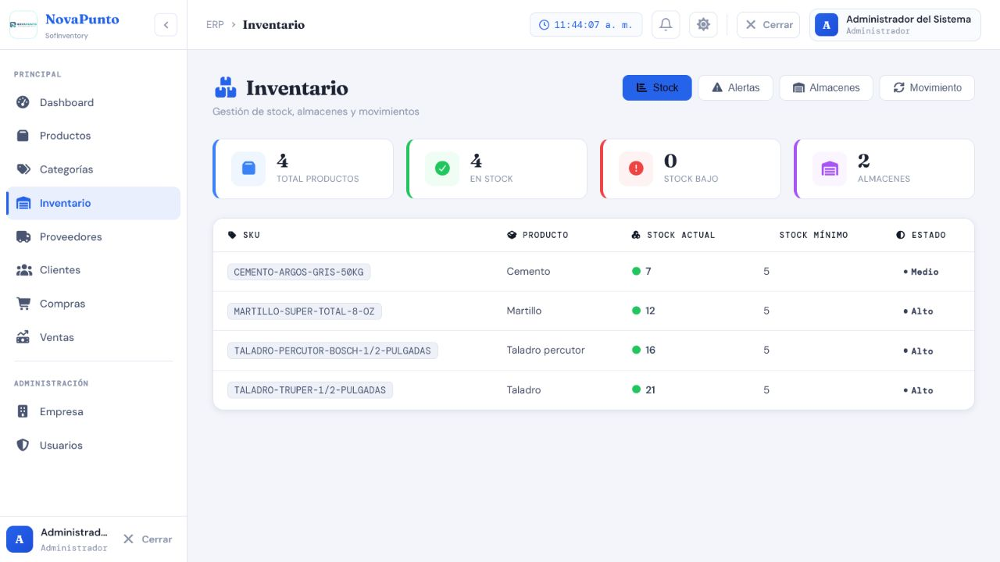
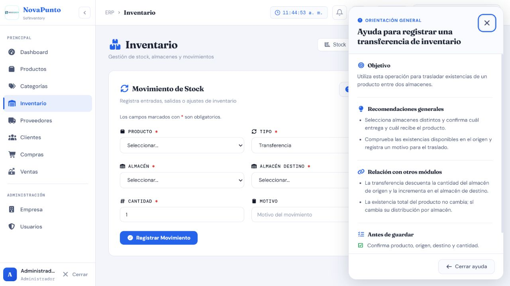

Casos de prueba — Inventario, movimientos y transferencias
Prefijo: TC-INV · Cobertura mínima: 7 casos · Ejecución final: 7 aprobados · Fecha: 8 de agosto de 2026
Alcance
Cubre stock por producto y almacén, entradas/salidas manuales, transferencias, trazabilidad, alertas, filtros y exportación. Los movimientos rápidos y la exportación admiten Administrador, Supervisor y Bodega; las consultas requieren autenticación. Las verificaciones transaccionales deben ejecutarse también en PostgreSQL 15.18.
Matriz de casos
| ID | Nombre | Tipo | Funcionalidad que verifica | Precondiciones y rol | Datos ficticios | Resultado esperado | Automatización existente | Falta automatización | Evidencia | Prioridad |
|---|---|---|---|---|---|---|---|---|---|---|
| TC-INV-001 | Integrar Compras y Ventas con stock | Integración | Entradas por compra, salidas por venta y cálculo acumulado | Producto configurado, almacén activo, proveedor/cliente válidos; roles autorizados | Tres compras y una venta con cantidades controladas | Stock final coincide; movimientos ENTRADA_COMPRA/SALIDA_VENTA trazables |
A — prueba aprobada en SQLite/PostgreSQL y flujo E2E ejecutado |
No para flujo base | AUTO + API + DB-R | Crítica |
| TC-INV-002 | Rechazar sobreventa y stock negativo | Negativo / seguridad | Suma líneas duplicadas, cantidad disponible y restricción de stock no negativo | Stock conocido; rol Vendedor o autorizado | Líneas repetidas que superan stock; actualización negativa directa en prueba aislada | Operación completa se rechaza; stock y movimientos no cambian; PostgreSQL impide negativo | A — test_lineas_duplicadas_no_permiten_sobreventa y test_base_de_datos_rechaza_stock_negativo |
Parcial: falta concurrencia y ejecución PostgreSQL | AUTO + API + DB-R | Crítica |
| TC-INV-003 | Registrar entrada y salida manual | Positivo / integración | movimiento_rapido para AJUSTE_POSITIVO y AJUSTE_NEGATIVO, motivo y auditoría |
Producto/almacén válidos; Administrador, Supervisor o Bodega | Entrada 5, salida 2, observación ficticia | Respuesta muestra stock anterior/nuevo; movimientos guardan usuario, tipo y observación; salida no excede stock | M — no se localizó prueba automatizada directa |
Sí: ambos tipos, motivo y rollback | AUTO + API + DB-R | Crítica |
| TC-INV-004 | Transferir entre almacenes | Positivo / integración | Descuento en origen, incremento en destino y conservación total | Dos almacenes distintos y stock suficiente; rol autorizado | Traslado de 4 unidades de A a B con observación | Total global no cambia; se crean traslado-salida y traslado-entrada relacionados | A — prueba aprobada en SQLite/PostgreSQL y transferencia UI E2E ejecutada |
Falta automatizar la interacción UI | AUTO + API + DB-R + MAN; transferencia y ayuda | Crítica |
| TC-INV-005 | Rechazar transferencia inválida | Negativo | Mismo origen/destino, cantidad cero/negativa, faltantes y stock insuficiente | Rol autorizado; uno o dos almacenes según variante | Origen=destino; cantidad 0; cantidad superior al stock | HTTP 400 controlado; ninguna cantidad ni movimiento cambia | M — no se localizó prueba automatizada directa |
Sí: tabla de variantes y atomicidad | AUTO + API + DB-R | Crítica |
| TC-INV-006 | Listar, filtrar, alertar y exportar inventario | Positivo / interfaz | Búsqueda, categoría, almacén, estado de producto/stock, alertas y CSV | Datos aislados con stock agotado, bajo, medio y alto; sesión autenticada | Productos ficticios con umbrales conocidos | Totales, orden, alertas y filas CSV coinciden; BOM/cabeceras correctos; sin datos ajenos | M — no se localizaron pruebas automatizadas de estos endpoints |
Sí: filtros, estadística, alerta y archivo | AUTO + API + MAN; stock actual | Alta |
| TC-INV-007 | Mantener consistencia ante concurrencia y anulaciones | Seguridad / integración | Bloqueo transaccional, idempotencia y prevención de anular compra consumida | PostgreSQL 15.18 aislado; compra/venta existentes; solicitudes concurrentes controladas | Dos salidas simultáneas sobre stock limitado; doble anulación | Nunca hay stock negativo ni doble reversión; una compra consumida no se anula | P — test_anulaciones_son_auditables_e_idempotentes y test_no_anula_compra_si_unidades_fueron_vendidas; no cubren concurrencia real |
Sí: TransactionTestCase/integración concurrente PostgreSQL |
AUTO + DB-R | Crítica |
{kind=link}
{kind=link}
Evidencia visual mínima
- INV-stock-actual.png: resumen y tabla de stock en escritorio.
- INV-transferencia-ayuda.png: formulario de transferencia con origen, destino, producto, cantidad y ayuda contextual.


No se necesitan capturas adicionales para cada cálculo. La evidencia principal debe ser la suite sobre PostgreSQL y consultas de solo lectura antes/después.
Riesgos pendientes
- Entradas y salidas manuales carecen de prueba directa.
- No existe cobertura automatizada de filtros, alertas, estadísticas ni CSV.
- SQLite en memoria no demuestra bloqueo ni concurrencia real; PostgreSQL 15.18 es obligatorio para TC-INV-002, TC-INV-005 y TC-INV-007.
Resultado final de ejecución
7/7 aprobados. Se ejecutaron Compra/Venta, entradas/salidas, Transferencia, negativos, filtros, alertas, CSV, anulaciones y concurrencia real en PostgreSQL 15. Dos salidas simultáneas sobre cinco unidades dejaron un único éxito y stock final uno. Ver resultados trazables.